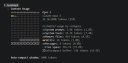
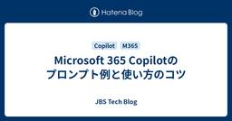
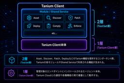
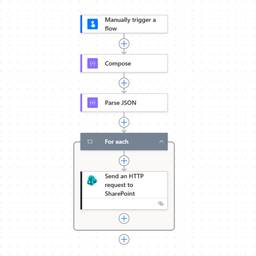
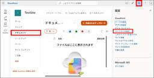
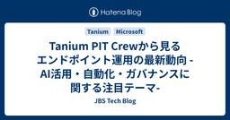
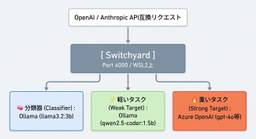

JBS Tech Blog
https://blog.jbs.co.jp/
JBS Tech Blogは、日本ビジネスシステムズ（JBS）の社員が分担して執筆を担当し、技術情報を発信しているブログです！Microsoft製品や生成AI関係の最新情報をはじめ、様々な製品やサービスの情報を幅広く公開しています。2022年3月より運用を開始し、営業日はほぼ毎日記事を公開しています。
フィード

Claude Code 拡張機能の選び方
JBS Tech Blog
Claude Code の活用において、CLAUDE.mdを書くところまで進めたのち、その先のスキルやフック、サブエージェント利用で手が止まることがあります。公式ドキュメントを開くと機能の一覧は出てきますが、自分が今どれを足すべきなのかは、一覧からは分かりにくいものです。 Claude Code の公式ドキュメントには、この点について「Build your setup over time（設定は少しずつ育てる）」という考え方が示されています。最初に全部そろえる必要はなく、困りごとが出てきたタイミングで、それに対応する機能を 1 つ足していくというものです。 本記事は、Claude Code を…
1日前

Microsoft 365 Copilotのプロンプト例と使い方のコツ
JBS Tech Blog
Microsoft 365 Copilotは、自然言語で指示を出すことで、文書作成・分析・メール対応などを支援するAIです。 ただし、実際の業務で使いこなすには以下3点が重要になります。 どう指示を出すか（プロンプト） どのように命令を書くか（構造） 記号の使い方 本記事では、実務で使えるプロンプト例とコツを整理します。 プロンプト例 目的を明確にする 出力形式を指定する 対象者を指定する 制約を明示する プロンプト例 まとめ プロンプト例 目的を明確にする Copilotに情報をまとめてもらう際、NG例とOK例をご紹介します。 NG：まとめて OK：3行で要点のみまとめて 「まとめて」のみだ…
2日前

【Microsoft×生成AI連載】エージェント活用ユースケース~エージェントを活用して資料のレビューを実施する~
JBS Tech Blog
【Microsoft×生成AI連載】久保田です。 顧客提出前の資料を事前に顧客観点でレビューするための、顧客資料レビューエージェントを作成しました。本記事では作成方法や利用シーンを紹介します。 エージェントを利用して業務改善を実施したい方や、Agent Builderで作成できるエージェントの活用イメージを知りたい方は是非ご覧ください。 これまでの連載 Agent Builderの概要 資料レビューエージェントの作成 今回のシナリオ 事前準備 エージェント作成 エージェント利用 利用シーンとメリット、注意点 利用シーン例 メリット 注意点 まとめ おまけ(Copilot Chatによる本記事の…
2日前

【Tanium】Tanium CloudにおけるTanium Clientアップグレードの方法と推奨運用
JBS Tech Blog
Tanium Cloudを安定的に運用するためには、Tanium Clientのアップグレード方針を適切に設計することが重要です。 Tanium Clientには複数のアップグレード方法が用意されており、それぞれ管理対象や運用方法が異なります。そのため、各方式の特徴を理解し、組織の運用要件に応じて適切に選択することが求められます。 本記事では、Tanium CloudとTanium Clientのアップグレードの違いを整理するとともに、Tanium Clientの構成やアップグレードの仕組みを解説します。あわせて、各管理方式の特徴や推奨される運用パターンについてご紹介します。 Tanium C…
2日前

【Power Automate × SharePoint リスト】列の一括追加＋ビュー表示を実現する方法
JBS Tech Blog
SharePoint リストの列を動的に追加したい場合や、複数リストに同じ列構成を展開する必要がある場合、Power Automate と SharePoint REST API を組み合わせることで、列の一括作成とビュー反映を効率的に行うことが可能です。 本記事では、Power Automate を用いて SharePoint リストに対して複数の列をまとめて追加し、あわせてビューにも表示させる方法についてご紹介します。 実装概要 フローの作成 Compose（列定義をJSONで作成） Parse JSON（手順2で作成したJSONを列ごとのデータとして取り出せるように） For each（…
2日前

ドキュメントライブラリの既定の秘密度ラベルと自動ラベル付けポリシーの違い
JBS Tech Blog
組織における情報保護の手段の一つとして、SharePoint Onlineにアップロードしたファイルに秘密度ラベルを適用するケースがあります。 秘密度ラベルは手動で適用できるほか、以下の方法により自動的に適用することも可能です。 ドキュメントライブラリの既定の秘密度ラベル 自動ラベル付けポリシー どちらも秘密度ラベルを自動適用する機能ですが、適用の仕組みや適用範囲が異なるため、それぞれの特徴を理解した上で適切に使い分けることが重要です。 本記事では、これら２つの機能の違いと設定方法についてご紹介します。 概要 ドキュメントライブラリの既定の秘密度ラベル 設定方法 秘密度ラベル適用確認 自動ラベ…
3日前

Tanium PIT Crewから見るエンドポイント運用の最新動向 -AI活用・自動化・ガバナンスに関する注目テーマ-
JBS Tech Blog
生成AIの活用拡大やクラウドサービスの普及により、企業のIT環境はますます複雑化しています。 デバイスやソフトウェアの増加に加え、生成AIサービスの利用状況やリスク管理など、新たな運用課題への対応も求められています。 このような環境では、IT資産の状態を継続的に把握し、運用改善やリスク低減につなげることが重要です。 Taniumでは、IT資産の可視化に加え、AI関連ツールやクラウドサービスの利用実態を把握するための機能強化も進んでいます。 JBSではTaniumの最新技術や知見の収集にも取り組んでおり、このたびCMS事業本部 田代みなみさんが、Taniumのグローバル技術コミュニティ「PIT …
4日前
【Microsoft×生成AI連載】【やってみた】PowerPointの「Edit with Copilot」にて新しく追加されたスキルを使ってみた
JBS Tech Blog
PowerPointでの資料作成、見直しに役立つCopilot新機能・2つのスキルを徹底紹介！デッキ内容の説明とタイトル刷新が簡単に。
4日前

【Microsoft Purview】MIPクライアントを使用して、Officeファイル以外に秘密度ラベルを付与する方法
JBS Tech Blog
Microsoft Purviewの秘密度ラベルは、組織内のデータを機密性に応じて分類し、適切な保護をする機能です。 以前の記事では、Microsoft Purviewの秘密度ラベルを利用したWordやExcel、PowerPointなどのOfficeファイルに対して機密性の分類と文書の保護の設定方法に関してご紹介しました。 【Microsoft Purview】秘密度ラベルの基本操作 - JBS Tech Blog しかし、業務の中ではPDFファイルやテキストファイル、CSVファイルなどのOfficeファイル以外にも機密情報を含むファイルを取り扱うケースがあります。 そこで今回は、Micro…
4日前
Claude Code の Agent Teams を単一セッションと比較検証してみた
JBS Tech Blog
Claude Code には、複数のセッションをチームとして並列稼働させる Agent Teams という機能があります。1 つのセッションが Team lead となり、独立したコンテキストウィンドウを持つ Teammates を起動して、タスクの割り当てと成果の統合を行います。 並列で動くので速くなることが期待されますが、実際にどの程度の効果があるのかは、対象の作業量によって変わります。今回は、同一のデモアプリケーションに対して同じ 3 タスクを「単一セッションで逐次実行」と「Agent Teams で並列実行」の 2 パターンで実施し、所要時間、トークン使用量、成果物の品質を比較しました…
4日前
Material for MkDocsで作るリッチなドキュメントサイト
JBS Tech Blog
Markdownで書いたドキュメントは管理しやすい一方、そのままではデザインが単調で検索性も低いのが難点です。この課題を解決してくれるのがMaterial for MkDocsです。 今回の記事ではMaterial for MkDocsの概要と基本的な使い方を紹介したいと思います。 Material for MkDocsとは 利用するメリット 基本的な使い方 設定のカスタマイズ 1. マテリアルデザインの適用 2. 日本語化 3. コードにコピーボタンを追加 4. 検索結果のハイライト mkdocs.ymlの全体像 設定の確認 HTMLファイルとして出力 想定される利用シーン まとめ Mate…
5日前
AlmaLinuxにSquidをインストールして使ってみた -PART.2- HTTPアクセス制御編
JBS Tech Blog
前回の記事ではAlmaLinuxにSquidをインストールするところまでを紹介しました。 blog.jbs.co.jp 本記事では、Squidをインストールした検証用プロキシサーバー「yn-alma01」を検証用Windows Clientに設定した上で、Squidへ「HTTPSアクセスは可能だがHTTPアクセスは不可」という設定を導入し、設定が有効になっているかを検証します。 事前確認 Squid設定 「squid.conf」のバックアップ取得 「squid.conf」の設定変更 事後確認 まとめ 事前確認 まずは検証用に構築した仮想Windows Client「yn-win10pc01」で…
5日前
Google Chatにおけるチャット内ファイル共有の制御
JBS Tech Blog
Google Chatでは、チャット内でファイルを共有する機能が提供されています。管理者は、ユーザーがチャット内で送信できるファイルの種類について制御することが可能です。 本記事では、「チャット内でのファイル共有」の設定内容と実際の動作について検証した結果を紹介します。 また、本検証は Google Chat の Enterprise アカウントを使用し、外部チャットを有効にした環境で実施しています。 チャット内でのファイル共有とは 設定項目 各設定値ごとの動作 すべてのファイルを許可 画像のみ どのファイルも許可しない 受信したファイルに対する操作 まとめ チャット内でのファイル共有とは G…
5日前
【Windows】Package Family Nameの調べ方
JBS Tech Blog
Windowsでは、インストールされたアプリケーションをシステム内部で正確に区別するために、Package Family Name（PFN）というものが用いられます。 PFNは、通常の操作ではあまり意識することはありませんが、IT管理やアプリ制御の場面では重要な役割を果たします。 本記事では、Package Family Nameの調べ方についてご紹介いたします。 Package Family Nameとは Package Family Nameの調べ方 まとめ 参考情報 Package Family Nameとは 「Package Family Name（PFN）」とは、Windowsにおい…
6日前

NeMo/SwitchyardでローカルLLMとAzure AI Foundryモデルを自動的に切り替えて使えるようにする
JBS Tech Blog
このブログ記事では、Switchyardを用いたハイブリッドLLMルーティング環境の構築とコスト削減の手法について詳しく解説します。
6日前

リソースタグに応じて利用料金を Teams で通知する方法（Logic Apps + Cost Management Query API )
JBS Tech Blog
本記事では、Azure のリソースタグを軸に利用料金を集計し、Microsoft Teams へ自動通知する仕組みを Azure Logic Apps で構成する方法を解説します。Cost Management Query API を HTTP リクエストで呼び出し、システム割り当てマネージド ID による認証を利用することで、資格情報を管理せずに安全な実装を実現します。CostCenter などのタグ単位でコストを可視化し、運用やコスト意識の向上につなげたい方に向けた実践的な内容です。
8日前
【Microsoft×生成AI連載】【やってみた】Copilot in Excelの「ブックルール」（.Rulesシート）でブック専用の指示書を作ってみた
JBS Tech Blog
Copilot in Excelの「ブックルール」（.Rulesシート）を実際に使い、ルールの作り方と、ルールの有無でCopilotの整形結果がどう変わるかを検証しました。利用シーンや注意点も紹介します。
9日前
検証前に作成しておきたい！Hyper-Vのチェックポイント機能
JBS Tech Blog
Hyper-Vで仮想マシンを作成し検証を行う際、以下のような経験をされたことはないでしょうか。 設定変更に失敗した ソフトウェアのインストールで問題が発生した 検証前の状態に戻したい このような時に便利なのが、Hyper-Vのチェックポイント機能です。 本記事では、Hyper-Vのチェックポイントとは何か、その作成方法と復元方法を紹介します。 チェックポイントとは チェックポイントの作成方法 チェックポイントから復元する方法 不要なチェックポイントは削除する まとめ チェックポイントとは チェックポイントとは、仮想マシンの現在の状態を保存する機能です。 ゲームのセーブポイントに似ており、問題が…
9日前
「Tanium Converge Tokyo 2026」から見るWhy Taniumと、Why JBS
JBS Tech Blog
JBSがブース出展したTanium Converge Tokyo 2026で明らかになった、Taniumに注目が集まる理由とJBSの強みを紹介。
9日前
【Microsoft Defender for Endpoint】デバイスグループによるアラート通知先制御
JBS Tech Blog
Microsoft Defender for Endpointの設定で、アラート通知先をカスタマイズ。デバイスグループによる精確なアラート管理手法を紹介します。
10日前
「Power AppsからPower AutomateへJSON形式でデータを送信する方法」＃２ー１
JBS Tech Blog
Power AppsからPower AutomateへJSON形式でデータを送信する方法、というテーマでで、前回はまずJSON形式でのデータの引き渡しについて記載しました。 Power AppsからPower AutomateへJSON形式でデータを送信する方法＃１ - JBS Tech Blog 本記事では、応用として、添付ファイルが1つある場合のJSONの形式での引き渡し方法について記載します。 ※本記事は「Power AppsからPower AutomateへJSON形式でデータを送信する方法＃１」の応用編として記載しており、準備手順やフローの作成手順については＃１をご確認ください。また…
10日前
Microsoft Purview における秘密度ラベルの作成手順
JBS Tech Blog
「社外秘のファイルを誤って共有してしまった」「機密情報を含むメールが意図せず外部へ送信された」といった情報漏えいリスクは、多くの企業が抱える課題の一つです。 Microsoft Purview の秘密度ラベルを利用することで、ファイルやメールの重要度を分類し、暗号化やアクセス制御などの保護を自動的に適用できます。 本記事では、Microsoft Purview ポータルから秘密度ラベルを新規作成する方法について手順を紹介します。 なお、最終的には実際に秘密度ラベルを付与して暗号化するところまで進めますが、今回はまず、機密情報を含むファイルやメールの保護を目的とした秘密度ラベルの作成までを解説し…
10日前
【Microsoft×生成AI連載】SharePointページエージェントを使ってみた
JBS Tech Blog
SharePointのページを作成する際、「SharePointのページ編集は難しそう」「どこから始めればいいかわからない」と感じる方も多いのではないでしょうか。 実は、「SharePointページエージェント」を使うと、Copilot Chatからやりたいことを伝えるだけで、SharePointのページ下書きを自然な会話で進めることができます。SharePointの編集画面を開く必要もありません。 本記事では、SharePointページエージェントを使ったSharePointの作成方法をご紹介します。 これまでの連載 SharePointページエージェントとは 実際にやってみた 利用シーンと…
11日前
Entra IDのデバイス情報をスクリプトで取得する方法
JBS Tech Blog
Entra IDやIntuneを運用していると、特定のグループに所属するユーザーのデバイス情報やIntune準拠状態を確認したい場面があります。管理センターから確認することもできますが、対象ユーザーが100人を超えるような場合には、1人ずつ確認していると多くの時間がかかります。 そこで今回は、Microsoft Graph PowerShellを利用して、特定のグループに所属するユーザーの以下の情報を一括で取得する方法を紹介します。なお、取得するデバイス情報はWidowsとiOSのみです。 UPN ユーザーの表示名 Entra IDに登録しているデバイス名（Windows、iOS） Entra…
11日前
Microsoft Entra IDのデバイス登録形態の違いと使い分け
JBS Tech Blog
Microsoft Entra ID（旧 Azure AD）のデバイス登録形態には、MER・MEJ・MHEJの3種類があります。 名前が似ていて混同しやすいですが、それぞれ用途もWindowsサインインの方法もまったく違います。この記事では3つの違いを表で整理し、それぞれ何ができるのかをまとめます。 3つのデバイス登録形態 ユーザー状態とデバイス状態の違い それぞれ何ができるのか MER（Microsoft Entra Registered） MEJ（Microsoft Entra Joined） MHEJ（Microsoft Entra Hybrid Joined） クラウドリソースとオンプ…
11日前
API Management 経由で Microsoft Foundry のモデルを呼び出してみた ～ マネージド ID で API キーを隠蔽する ～
JBS Tech Blog
生成 AI の業務活用が広がるにつれ、「誰が・どのモデルを・どれだけ使ったか」を統制できる仕組みが求められるようになってきました。 アプリケーションから Microsoft Foundry (以下、Foundry) のモデルを直接呼び出す構成は手軽ですが、以下のような課題があります。 API キーのクライアント側への露出リスク 利用量 (トークン) の制御・コスト管理の困難さ 利用ログの残りにくさ クライアントごとの認証方式のばらつき 本記事では、これらの課題への第一歩としてAzure API Management (以下、APIM) を Foundry の前段に配置し、Foundry のモデ…
12日前
【Microsoft Intune】構成プロファイルで電源接続時・バッテリー駆動時の画面ロック時間を分けて設定する方法
JBS Tech Blog
こんにちは。JBSの城下です。 Microsoft Intune（以下、Intune）でWindows端末を管理していると、以下のような要件をいただくことがあります。 「電源接続時は利便性を重視したい」 「バッテリー駆動時はセキュリティや省電力を重視したい」 本記事では、電源接続時とバッテリー駆動時で異なる画面ロック時間を実現する方法をご紹介します。 構成プロファイルとOS仕様の違いについて 今回のシナリオ 利用する設定 設定手順 実際の動作 電源接続時 バッテリー駆動時 まとめ 構成プロファイルとOS仕様の違いについて Intuneで画面ロックを構成する場合、構成プロファイル「Device …
12日前
Microsoft Entra Connectサーバーのスウィングアップグレードの流れ
JBS Tech Blog
Microsoft Entra Connectサーバー（以降、MECサーバー）は、バージョンが古くなるとサポート対象外となり、同期が強制的に停止される可能性があるため、定期的に最新版へアップグレードする必要があります。 MECサーバーのアップグレードには複数の方法があります。今回は、各バージョンアップの方法について概要を紹介するとともに、筆者が実際に作業を行ったスウィングアップグレードを例に、新規サーバーのインストールから切り替え、既存サーバーのアンインストールの一連の流れや注意事項について説明します。 MECサーバーのアップグレードの手法 自動アップグレード インプレースアップグレード スウ…
13日前
DP-900 合格体験記
JBS Tech Blog
データベース管理者の業務を担当している田中と申します。 DP-900（Microsoft Azure Data Fundamentals）に合格したので、これから受ける方向けに合格の体験記を残しておきます。 結論だけ書くと、学習時間は約15時間、教材はMicrosoft LearnとUdemyの教材を利用し、前提知識があれば無理なく準備ができる資格だと感じました。 Azureのデータベース関連のサービスにこれから触れる方や、DP-300の受験を視野に入れている方を主な対象として書いています。 この記事の構成は以下のとおりです。 DP-900の受験理由 資格の概要 学習時間 使用教材 Udemy…
15日前